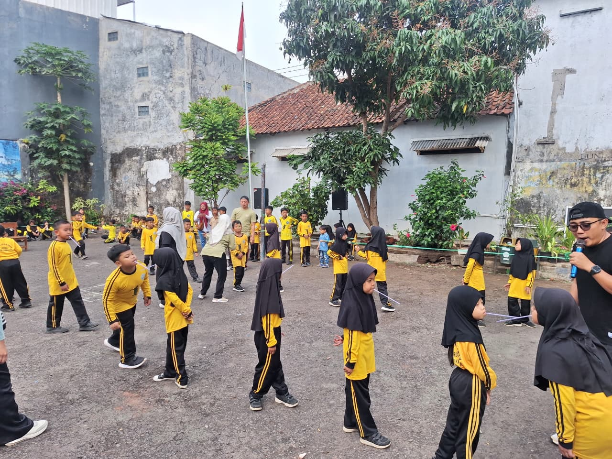
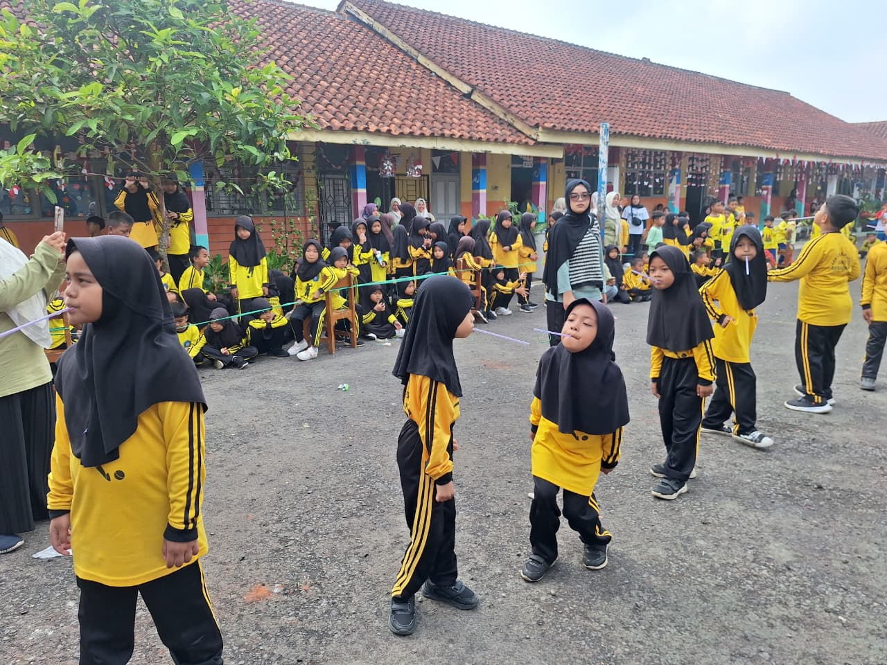
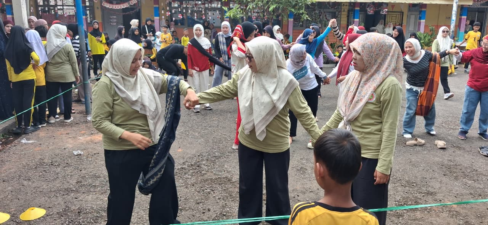
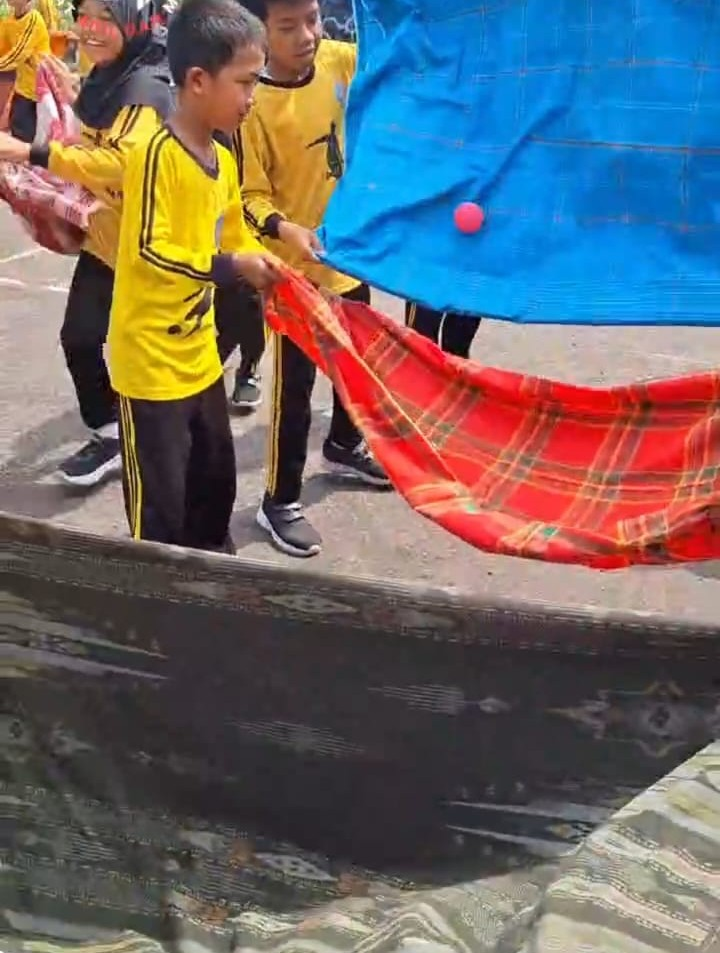
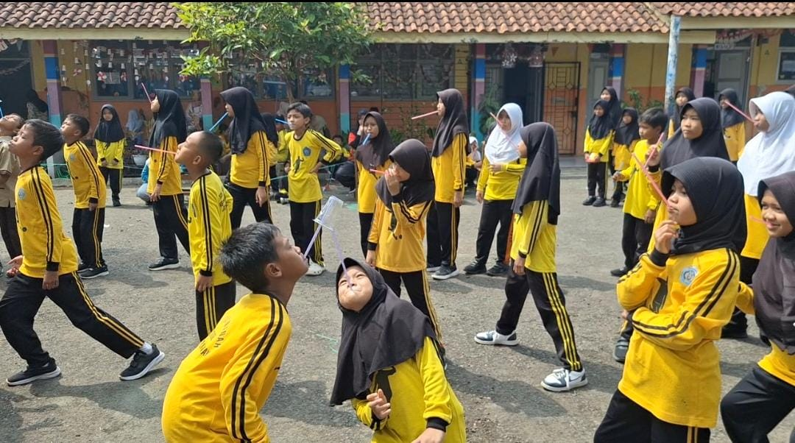
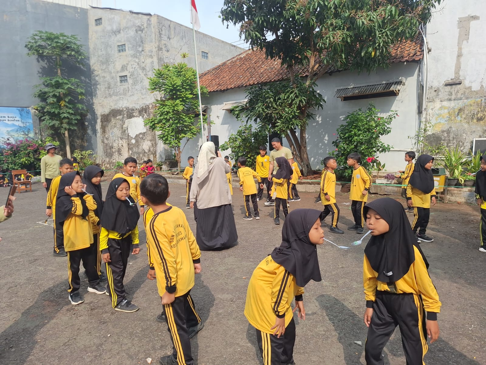
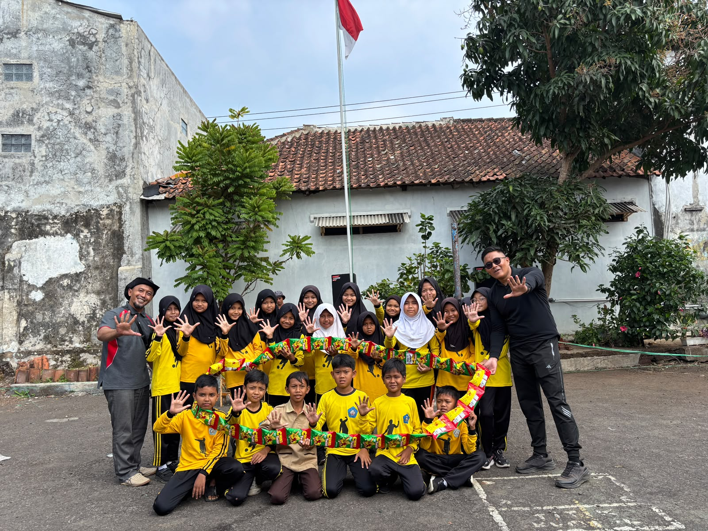
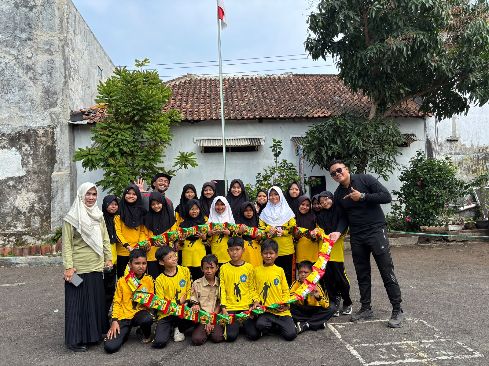

SDN 1 Sukamanah menutup seluruh rangkaian kegiatan dalam rangka memperingati Hari Pramuka ke-65 dan Hari Ulang Tahun Kemerdekaan Republik Indonesia ke-81 Tahun 2026 dengan kegiatan perlombaan yang berlangsung meriah dan penuh kebersamaan.
Kegiatan perlombaan ini menjadi rangkaian terakhir sekaligus penutup dari seluruh kegiatan yang telah dilaksanakan sebelumnya. Berbagai kegiatan telah berlangsung secara bertahap, dimulai dari Pesta Siaga, dilanjutkan dengan Kegiatan Pramuka Penggalang, kemudian Upacara Peringatan Hari Pramuka, Karnaval Kemerdekaan, serta Upacara Peringatan HUT Kemerdekaan Republik Indonesia ke-81.
Berbagai perlombaan berlangsung dalam suasana yang ceria, meriah, dan penuh keakraban. Sorak-sorai serta dukungan dari para peserta dan penonton turut menambah semangat sepanjang kegiatan berlangsung. Kebersamaan antara siswa, guru, dan orang tua/wali murid menjadi salah satu hal yang membuat kegiatan ini semakin berkesan.
Kegiatan perlombaan bukan hanya menjadi ajang untuk meraih kemenangan, tetapi juga menjadi sarana untuk mempererat silaturahmi, kekompakan, gotong royong, dan kebersamaan seluruh warga SDN 1 Sukamanah. Melalui kegiatan ini, semangat kebersamaan yang telah terjalin selama seluruh rangkaian peringatan semakin terasa kuat.
Dengan terlaksananya kegiatan perlombaan tersebut, maka seluruh rangkaian kegiatan peringatan HUT Pramuka ke-65 dan HUT Kemerdekaan Republik Indonesia ke-81 Tahun 2026 di SDN 1 Sukamanah secara resmi telah ditutup.
Seluruh kegiatan, mulai dari Pesta Siaga, Kegiatan Pramuka Penggalang, Upacara Peringatan Hari Pramuka, Karnaval Kemerdekaan, Upacara HUT RI ke-81, hingga kegiatan perlombaan, dapat terlaksana dengan baik.
Dokumentasi video kegiatan perlombaan sebagai penutup rangkaian HUT Pramuka ke-65 dan HUT RI ke-81 SDN 1 Sukamanah.







Atas nama pribadi dan seluruh pihak yang terlibat, Kepala SDN 1 Sukamanah menyampaikan rasa terima kasih yang sebesar-besarnya kepada seluruh pihak yang telah bekerja sama dan berkolaborasi dalam menyukseskan seluruh rangkaian kegiatan.
“Assallamuallaikum warajamatulohi wabarokatuh. Bapa kalih ibu, simkuring atas nami pribadi ngahaturkeun nuhun nu luar biasa ka sadaya anu parantos rempeg kolaborasi sareng sepuhna murangkalih dugi ka tiasa ngameriahkeun HUT Pramuka (65) sareng HUT RI (81) dugi ka tiasa kalaksanakeun dina kaayaan aman, repeh, rapih, salamet, sukses ti kawit dugi ka akhir, mugi janten amal ladang pahala kasaean kanggo urang sadaya. Aamiin 🤲🤲🤲”
Ucapan tersebut merupakan bentuk apresiasi kepada seluruh warga SDN 1 Sukamanah, Bapak dan Ibu Guru, para peserta didik, serta seluruh orang tua/wali murid yang telah memberikan dukungan dan turut berpartisipasi dalam setiap rangkaian kegiatan.
Semoga kebersamaan, kekompakan, dan semangat gotong royong yang telah terjalin dapat terus terjaga. Semoga seluruh usaha dan kebaikan yang telah diberikan menjadi amal kebaikan serta membawa manfaat bagi kita semua.
Dari semangat Pesta Siaga, kebersamaan Kegiatan Penggalang, kekhidmatan Upacara Hari Pramuka, kemeriahan Karnaval Kemerdekaan, semangat Upacara HUT RI ke-81, hingga kegembiraan perlombaan, seluruh rangkaian kegiatan menjadi bukti nyata semangat kebersamaan warga SDN 1 Sukamanah.
MERDEKA!